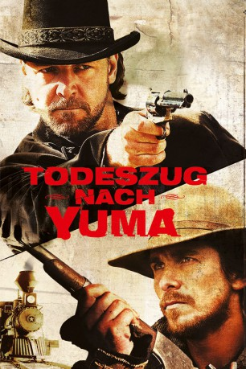
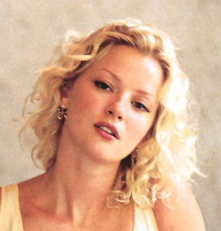
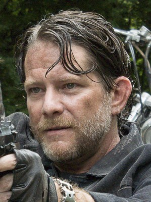
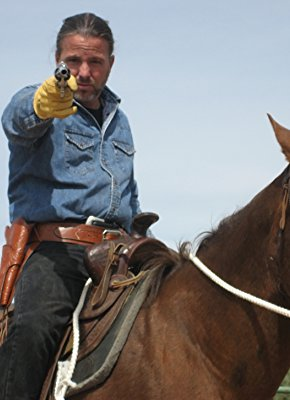

#1257 Todeszug nach Yuma
Alternativ: 3:10 to Yuma
Auszeichnungen: für 2 Oscars nominiert
 
 IMDB-Wertung: 7.7 / 10
IMDB-Wertung: 7.7 / 10  Metascore: 76
Metascore: 76 
Der Farmer und Bürgerkriegsinvalide Dan Evans steht kurz vor dem endgültigen Scheitern: Sein Land leidet unter der Dürre, er ist hoch verschuldet und er sinkt beständig in der Achtung seiner Familie. Während er verzweifelt einen letzten Versuch unternimmt, die Tilgung seiner Schulden aufzuschieben, wird er Zeuge der Verhaftung des berüchtigten Banditen Ben Wade, der kurz zuvor mit seiner Bande einen Geldtransport der Eisenbahngesellschaft überfallen hat. Dieser soll nun zur Eisenbahnstation in das einige Tage entfernte Contention gebracht werden, von wo aus der Zug zum Gefängnis in Yuma fährt. Kurzentschlossen meldet sich Evans freiwillig als Begleiter, um mit dem Lohn seine Farm retten zu können. Gefahr droht dabei nicht nur von Wades Bande, die unter der Führung des unbarmherzigen Charlie Prince die Verfolgung der Gruppe aufnimmt. Auch Wade selbst, obgleich äußerlich harmlos und freundlich, bleibt eine tödliche Gefahr ...
Jahr: 2007
Dauer: 122 Minuten
FSK: 16
Land: USA Studio: LionsgateTonspuren:
Untertitel: Deutsch,
Auflösung: 1080p (1920x800) Größe: 11059 MB
Genre: Action, Abenteuer, Krimi, Drama, Western
Regisseur:  James Mangold
James Mangold
Drehbuch: Halsted Welles, Michael Brandt, Derek Haas, Elmore Leonard
Soundtrack: Marco Beltrami
Darsteller:
 Russell Crowe als Ben Wade
Russell Crowe als Ben Wade Christian Bale als Dan Evans
Christian Bale als Dan Evans Logan Lerman als William Evans
Logan Lerman als William Evans- Dallas Roberts als Grayson Butterfield
 Ben Foster als Charlie Prince
Ben Foster als Charlie Prince Peter Fonda als Byron McElroy
Peter Fonda als Byron McElroy Vinessa Shaw als Emma Nelson
Vinessa Shaw als Emma Nelson Alan Tudyk als Doc Potter
Alan Tudyk als Doc Potter Luce Rains als Marshal Weathers
Luce Rains als Marshal Weathers-  Gretchen Mol als Alice Evans
 Lennie Loftin als Glen Hollander
Lennie Loftin als Glen Hollander Rio Alexander als Campos
Rio Alexander als Campos- Johnny Whitworth als Darden
 Brian Duffy als Sutherland
Brian Duffy als Sutherland Kevin Durand als Tucker
Kevin Durand als Tucker Chris Browning als Crawley
Chris Browning als Crawley- Forrest Fyre als Walter Boles
 Luke Wilson als Zeke
Luke Wilson als Zeke Benjamin Petry als Mark Evans
Benjamin Petry als Mark Evans Arron Shiver als Bill Moons
Arron Shiver als Bill Moons- Girard Swan als Deputy Harvey Pell
-  Christopher Berry als Deputy Sam Fuller
- James Blackburn als Gunfighter , uncredited
- Brian Brown als Bad Guy #1 , uncredited
- Trevor Coppola als William Marsh , uncredited
- Darren Gibson als Gunman , uncredited
- KC King als Contention Gunman , uncredited
- Melinda Kramer als Bisbee Townsperson , uncredited
- Brent Lambert als Merchant , uncredited
-  Billy Lockwood als Gunman , uncredited
- J. Nathan Simmons als Town Drunk , uncredited
- Shawn Howell als Jackson
- Pat Ricotti als Jorgensen
- Ramon Frank als Kinter
- Deryle J. Lujan als Nez
- James 'Scotty' Augare als Nez
- Jason Rodriguez als Tighe
- Chad Brummett als Kane
 Sean Hennigan als Marshal Will Doane
Sean Hennigan als Marshal Will Doane- David Oliver als Evil Bartender
- Jason Henning als Train Clerk
- Barbara Bartleson als Contention Woman , uncredited
- Harp Corrigan als Bisbee Townsman , uncredited
- Hugh Elliot als Gunman , uncredited
- Graeme Ford als Gunman , uncredited
- Art Usher als Contention Gunman , uncredited
Datei: X:\HD-Western-2000-2015\Todeszug nach Yuma (2007, FSK16, 1920x800).mkv seit 12.06.2015
Festplatte: HD Eastern+Western
 Es gibt insgesamt 61 Filme in der Gruppe 'HD-Western-2000-2015'
Es gibt insgesamt 61 Filme in der Gruppe 'HD-Western-2000-2015'